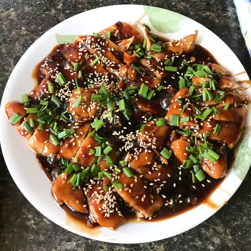

Chicken Teriyaki Recipe
Home

Description
Enjoy a delicious, hassle-free baked chicken dish that is simple to prepare and easy to clean up! This flavorful teriyaki chicken has earned rave reviews, and is personally my all-time favorite dish. The recipe is versatile, allowing you to customize it to your liking. Whether baked or cooked on the stove top, the chicken pairs beautifully with steamed rice or your favorite sides.
It's a crowd-pleasing meal that is both simple to make and sure to impress!
Prep Time:
15 minutes
Cook Time:
35 minutes
Servings:
4
Ingredients
*Note: To double the serving size, multiply each ingredient by 2.
- 2 tablespoons cornstarch
- 2 tablespoons water
- 1 cup low-sodium soy sauce
- 1/2 cup white sugar
- 1/4 cup mirin (Japanese sweet wine)
- 4 teaspoons grated fresh ginger
- 3 cloves garlic, minced
- 1/4 teaspoon red pepper flakes
- 4 skinless, boneless chicken breast halves
Steps
- Preheat oven to 400 degrees F (200 degrees C).
- Whisk cornstarch and water together in a small bowl until dissolved; set aside.
- Combine soy sauce, sugar, mirin, ginger, garlic, and red pepper flakes together in a saucepan over medium heat until the mixture starts to simmer.
- Slowly whisk in cornstarch mixture.
- Bring to a boil; reduce heat to medium-low, and simmer until thickened, stirring often, about 10 minutes.
- Pat chicken dry with paper towels; arrange in a baking dish.
- Pour sauce over chicken breasts, coating all sides.
- Bake chicken breasts in the preheated oven until no longer pink in the center and the juices run clear, 25 to 30 minutes. An instant-read thermometer inserted into the center should read at least 165 degrees F (75 degrees C).